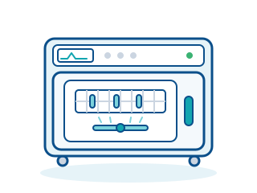

Sterilisation & Hygiene · Gerät 26 von 28
Reinigungs- und Desinfektionsgerät (RDG)
Maschinelle Reinigung und thermische Desinfektion
Reinigungs- und Desinfektionsgeräte (RDG) reinigen und desinfizieren Instrumente maschinell in einem validierten Programm und ersetzen damit die fehleranfällige manuelle Aufbereitung.

Funktionsweise
Die Instrumente werden in Siebkörben oder auf speziellen Beladungswagen in die Kammer gestellt, Hohlinstrumente werden an Spüladapter angeschlossen, damit sie innen durchströmt werden. Das Programm beginnt mit einer Vorspülung mit kaltem Wasser, die Blut und Gewebereste löst, bevor sie durch Wärme gerinnen könnten.
In der Reinigungsphase zirkuliert warmes Wasser mit einem meist alkalischen oder enzymatischen Reiniger über Sprüharme durch die Kammer. Es folgen Zwischenspülungen und bei Bedarf eine Neutralisation mit saurem Mittel. Für die thermische Desinfektion wird das vollentsalzte Spülwasser auf 90 bis 93 °C erhitzt und einige Minuten gehalten, was einem definierten A0-Wert von in der Regel 3000 entspricht.
Abschließend trocknet ein Heißluftgebläse das Spülgut, damit es sofort geprüft und verpackt werden kann. Alle Programmparameter wie Temperatur, Zeit und Dosiermenge werden aufgezeichnet und als Chargenprotokoll gespeichert. Die Validierung nach DIN EN ISO 15883 weist nach, dass das Gerät mit den verwendeten Beladungen und Chemikalien reproduzierbar das geforderte Ergebnis erreicht.
Einsatzbereiche
- ZSVA/AEMP im Krankenhaus mit mehreren Großgeräten
- Aufbereitungsraum chirurgischer und zahnärztlicher Praxen
- Endoskopieabteilungen mit speziellen RDG-E für flexible Endoskope (chemothermische Desinfektion bei niedrigerer Temperatur)
- Aufbereitung von Anästhesie- und Beatmungszubehör
- Reinigung von Sterilgutcontainern und OP-Schuhen in großen Kammergeräten
Auf einen Blick
- Risikoklasse (MDR)
- IIa; IIb, wenn die Desinfektion invasiver Produkte (z. B. flexibler Endoskope) der letzte Aufbereitungsschritt ist (Regel 16 MDR)
- Typische Einsatzorte
- ZSVA/AEMP, Aufbereitungsräume in Praxen, Endoskopieeinheiten
- Platzbedarf
- Untertisch- oder Standgerät ab ca. 60 cm Breite; Durchreichegeräte als Trennung zwischen unreiner und reiner Seite
- Typische Nutzungsdauer
- ca. 10 bis 12 Jahre
Worauf bei der Beschaffung achten?
- Kapazität und Beladungssysteme festlegen: Anzahl der Siebkörbe pro Charge sowie Einsätze für Hohlinstrumente, Dental-Handstücke, Anästhesiezubehör oder MIC-Instrumente bestimmen, ob das Gerät zum tatsächlichen Instrumentarium passt.
- Raum und Anschlüsse planen: Kalt-, Warm- und VE-Wasser, temperaturbeständiger Abwasseranschluss, Drehstrom sowie bei Durchreichegeräten eine bauliche Trennung in unreine und reine Seite; Abluft und Wärmelast im Raum berücksichtigen.
- Prozesschemie und Dosierung: Reiniger, Neutralisator und Klarspüler müssen auf das Gerät und die Instrumentenwerkstoffe abgestimmt sein; automatische Dosierpumpen mit Füllstandsüberwachung verhindern Fehlchargen.
- Validierung nach DIN EN ISO 15883 und regelmäßige Leistungsqualifikation einplanen, dazu Prüfkörper für Reinigungsleistung und Proteinnachweis; ohne gültige Validierung ist die Freigabe der Charge nicht zulässig.
- Dokumentation, Service und Schulung: Chargenprotokolle digital archivieren, Anbindung an die Instrumentenverfolgung prüfen, Servicevertrag mit Wartung und Ersatzteilen vereinbaren und das Personal nach MPBetreibV einweisen.
Wichtige Begriffe
- A0-Wert
- Maß für die Abtötung von Mikroorganismen durch feuchte Hitze; A0 3000 entspricht beispielsweise 90 °C über fünf Minuten und ist der übliche Wert für die thermische Desinfektion von Instrumenten.
- Thermische Desinfektion
- Desinfektion ausschließlich durch heißes Wasser ohne chemische Desinfektionsmittel; sie ist zuverlässig, gut validierbar und rückstandsfrei.
- Spüladapter
- Anschlussstück, das Hohlinstrumente wie Kanülen oder Schläuche mit dem Wasserkreislauf verbindet, sodass auch Innenflächen gereinigt werden.
Sie planen die Anschaffung eines solchen Geräts?
Wir beraten Sie herstellerneutral, vergleichen Angebote und begleiten die Beschaffung.
Beratung anfragen